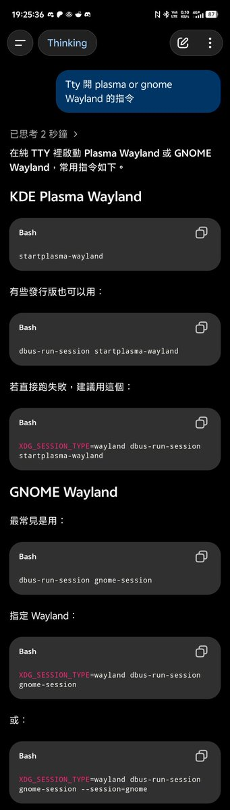

@XLionc @acnekot 这个我好像有印象确实遇到过这个问题？我是让llm帮我写了启动脚本喵，我现在的使用方法就和我之前说的一样，ssh进去登录然后启动脚本，之后换成moonlight就可以连进去啦


@copymellowclip @acnekot 我突然意識到你在說什麼了
你說得終端機開 Wayland session 只能在 tty 下執行才能開，SSH 那種 pty 是「打不開」的
然後如果你用 tty 開的 session 還會有 keyring/wallet 不能自動解鎖的問題，當然你可以關閉它們的密碼，但這會造成安全問題 https://t.co/KNLJWGr8Pm
你說得終端機開 Wayland session 只能在 tty 下執行才能開，SSH 那種 pty 是「打不開」的
然後如果你用 tty 開的 session 還會有 keyring/wallet 不能自動解鎖的問題，當然你可以關閉它們的密碼，但這會造成安全問題 https://t.co/KNLJWGr8Pm